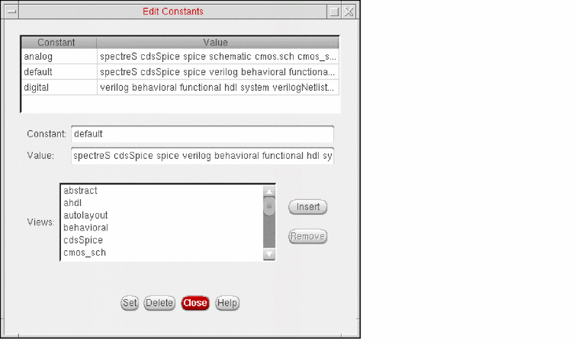

Creating and Editing Constants
A constant is a symbolic name that represents a view list. Constants provide a way to store and retrieve long view lists. You can create a constant and use it anywhere you use a View List and a Stop List.
-
Choose Edit – Constants.
The Edit Constants form appears. - In the Constant field, type the name you want to use to denote the view list.
-
In the Value field, specify the view list by doing one of the following:
- Select a view in the Views list box, then click Insert. Repeat for all the views you want to add to the view list.
- Type the view list.
The view names must appear in order of preference. The first view that is found is used.
You can change the default list of views in the View Choices list box. - Click Set.
The Hierarchy Editor creates the constant.The constant and its value appear in the table at the top of the form.
To edit the views included in an existing constant,
-
Choose Edit – Constants.
The Edit Constants form appears. -
In the table at the top of the form, click the constant whose views you want to change.
The constant name is displayed in the Constant field and its views are displayed in the Value field. - To add a view,
- To remove a view,
- When you have finished editing the Value field, click Set.
Related Topics
Changing the Views in the View Choices List Box
Return to top